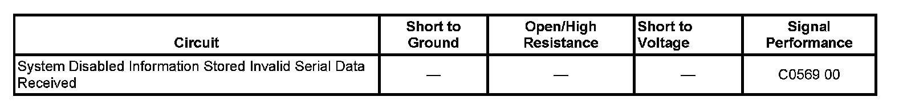

Antilock Brakes / Traction Control Systems
DTC C0569
DTC Descriptor
DTC C0569 00
System Configuration Error
Diagnostic Fault Information
Perform the Diagnostic System Check - Vehicle prior to using this diagnostic procedure. Initial Inspection and Diagnostic Overview

Circuit/System Description
The electronic brake module (EBCM) receives a GMLAN message from each of the network modules. Each module contains its own unique identification (Id) code that must be learned into the EBCMs memory. Once all the IDs have been learned and vehicle speed is 25 mph, or greater, the EBCM continuously compares Ids in the GMLAN message to its learned Ids to determine if all the network modules are present.
Conditions for Running the DTC
The ignition is ON.
Conditions for Setting the DTC
The EBCM has not undergone the programming procedure.
Action Taken When the DTC Sets
The driver information center (DIC) displays the SERVICE ABS warning message.
Conditions for Clearing the DTC
A current DTC will clear when the EBCM has undergone the setup procedure.
Diagnostic Aids
A newly replaced EBCM will set DTC C0569 on its initial ignition ON cycle.
Reference Information
Scan Tool Reference
Scan Tool Data List
Special Tools Required
J-46079 Tire Pressure Monitor Diagnostic Tool
Repair Instructions
Perform the Diagnostic Repair Verification after completing the diagnostic procedure. Verification Tests
Electronic Brake Control Module Programming and Setup